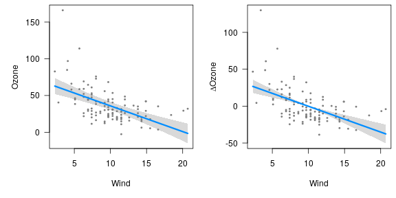

Conditional plots were discussed in getting started. The downside of a conditional plot is that all of the terms in the model must be specified – i.e., to plot the relationship between wind and ozone, we also need to specify a value for temperature (or use the median as a default). Specifically, letting $x$ denote the predictor of interest, $y$ the outcome, and $\xj$ the other predictors in the model, a conditional plot represents the relationship $f(x) = \Ex(Y|x, \xj)$.
As an alternative, we could consider relative changes, or as they are called in statistics, contrasts. To be specific, let $x_0$ denote a reference value for, e.g., wind, and consider plotting $f(x) = \Ex(Y|x) - \Ex(Y|x_0)$. Readers who have taken a course in regression will recognize that this is one of the defining characteristics of a regression model: a one-unit change in $x$ has the same effect on $\Ex(Y)$ regardless of what the other terms in the model are. Models outside the regression framework, such as random forests and support vector machines, do not have this property, and therefore, may only be visualized with conditional plots.
To summarize, the primary advantage of a contrast plot is that we don’t have to specify $\xj$, while the primary disadvantage is that we have to specify a reference value $\x_0$. By default, the reference value in visreg for a numeric variable is its mean, and for a factor its first, or reference, level.
To see how contrast plots compare to conditional plots, let’s fit the same model as in getting started, but display contrast plots and conditional plots side-by-side:
airquality$Heat <- cut(airquality$Temp, 3, labels=c("Cool", "Mild", "Hot"))
fit <- lm(Ozone ~ Solar.R + Wind + Heat, data=airquality)
par(mfrow=c(1,2))
visreg(fit, "Wind", type="conditional")
visreg(fit, "Wind", type="contrast")

visreg(fit, "Heat", type="conditional")
visreg(fit, "Heat", type="contrast")
The similarity between the plots is that the slopes of the lines, and the differences between the levels of Heat, are exactly the same in both plots. However, the vertical axes and the confidence intervals are different. In particular, the confidence interval for a contrast plot has zero width at the reference level: we can say with certainty that $\Ex(Y|x_0) - \Ex(Y|x_0)=0$. There is always uncertainty, however, about the actual value of $\Ex(Y)$ in a conditional plot for all values of $x$. Likewise, at the mean value of wind, 9.96, the contrast plot passes through 0 by construction, wheras the conditional plot passes through 34.6.
Furthermore, even where both confidence intervals have nonzero width, they do not have the same width, because they represent different things. For example, the width of the confidence interval for Mild heat is wider for the contrast plot than it is for the conditional plot: there is less uncertainty about the expected value of ozone on a mild day than there is about the difference in expected values between mild and cool days.
In these documentation pages, we focus primarily on conditional plots to avoid duplication, but all of the options and ideas we discuss carry over to contrast plots as well. It is worth noting, however, that there are three situations in particular where contrast plots are very useful:
- Logistic regression applied to case-control studies: In such studies, the estimation of the intercept parameter is typically meaningless, so conditional plots are of questionable value. Contrast plots, however, are still meaningful ways to visualize the model’s estimates.
- Cox relative risk (proportional hazards) models: Likewise, in Cox models, the baseline hazard is not estimated and plots of absolute risk are dubious, but contrast plots still useful.
- Random effect models: Most random effect modeling software cannot account for uncertainty in the random effects when calculating standard errors for $\Ex(Y)$. Thus, while conditional plots may still be constructed, they will lack confidence intervals. In contrast plots, these terms drop out, and confidence intervals may still be constructed.